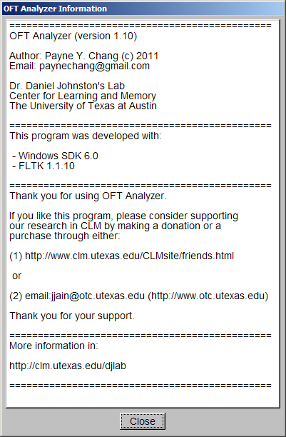

.
.This program is developed for the analysis of Open Field Test (OFT) video.
Author: Payne Y. Chang (c) 2011
Email: paynechang@gmail.com
Dr. Daniel Johnston's Lab
Center for Learning and Memory
The University of Texas at Austin
Video of analysis in action (reduced size, faster playback)
Thank you for your interest in OFTAnalyzer. If you like this program, please consider supporting our research in CLM by making a donation or a purchase through either:
Thank you for your support.
More information in:
The development environment is described as following:
The tested video format is described as following:
Available files
This is the user interface when you start OFTAnalyzer.
To quit OFTAnalyzer, press "Esc" button in your keyboard.
To open a file:
After opening the video file, OFTAnalyzer will show the first frame in the video
window.
The file name will be displayed in the "File Name" box.
To show "OFTAnalyzer Information" window, click "Information"
button.
You need to close this window before you do analysis.

To play the video, click
.
To stop playing the video, click
again.
OFTAnalyzer will display and examine the frame every 0.1 second (the video time).
OFTAnalyzer will try to play the video as fast as possible.
To step back one frame, click
 .
.
To step forward one frame, click .
To go to the first frame, click .
To go to the last frame, click .
The elapsed time will be displayed in "Video Time" boxes.
The left yellow box displays the time in seconds.
The right gray box displays the time in "min : sec".
You can go to a specific frame by left-click inside the yellow box and drag to the
left to go backward and to the right to go forward.
When
 is checked, you will see a big blue square devided into nine squares.
is checked, you will see a big blue square devided into nine squares.
The area inside the big blue square is the inspection area.
OFTAnalyzer will examine pixels in the inspection area and ignore the rest.
"X0" box displays the x coordinate (in pixels) of the left boundary.
To move the inspection area horizontally, left-click "X0" box and drag
to the left to move to the left, or to the right to move to the right.
"W" box displays the width (in pixels) of the inspection area.
To change the width, left-click "W" box and drag to the left to reduce
the width, or to the right to increase the width.
"Y0" box displays the y coordinate (in pixels) of the top boundary.
To move the inspection area vertically, left-click "Y0" box and drag to
the left to move to the top, or to the right to move to the bottom.
"H" box displays the height (in pixels) of the inspection area.
To change the height, left-click "H" box and drag to the left to reduce
the height, or to the right to increase the height.
If the field is too dim to see the boundaries clearly, you can check "Brightness
Control" to increase the brightness.
The fold of increase is displayed in the "Fold" box.
To change the fold, left-click "Fold" box and drag to the left to reduce
it, or to the right to increase it.
After setting the inspection area, clear "Brightness Control".
It is recommended that the inspection area should cover the whole field.
If there is an interference, OFTAnalyzer provides a simple way to remove it.
In the above example, the time box covers a part of the inspection area.
The changing digits will interfere with the calculation of the body center.
To display the excluded box, click "Draw Excluded Box" and you will see
a cyan box.
To exclude the area, check "Exclude Box" and you will see the cyan box
is filled with black.
"X0" box displays the x coordinate (in pixels) of the left boundary.
To move the excluded area horizontally, left-click "X0" box and drag to
the left to move to the left, or to the right to move to the right.
"W" box displays the width (in pixels) of the excluded area.
To change the width, left-click "W" box and drag to the left to reduce
the width, or to the right to increase the width.
"Y0" box displays the y coordinate (in pixels) of the top boundary.
To move the excluded area vertically, left-click "Y0" box and drag to
the left to move to the top, or to the right to move to the bottom.
"H" box displays the height (in pixels) of the excluded area.
To change the height, left-click "H" box and drag to the left to reduce
the height, or to the right to increase the height.